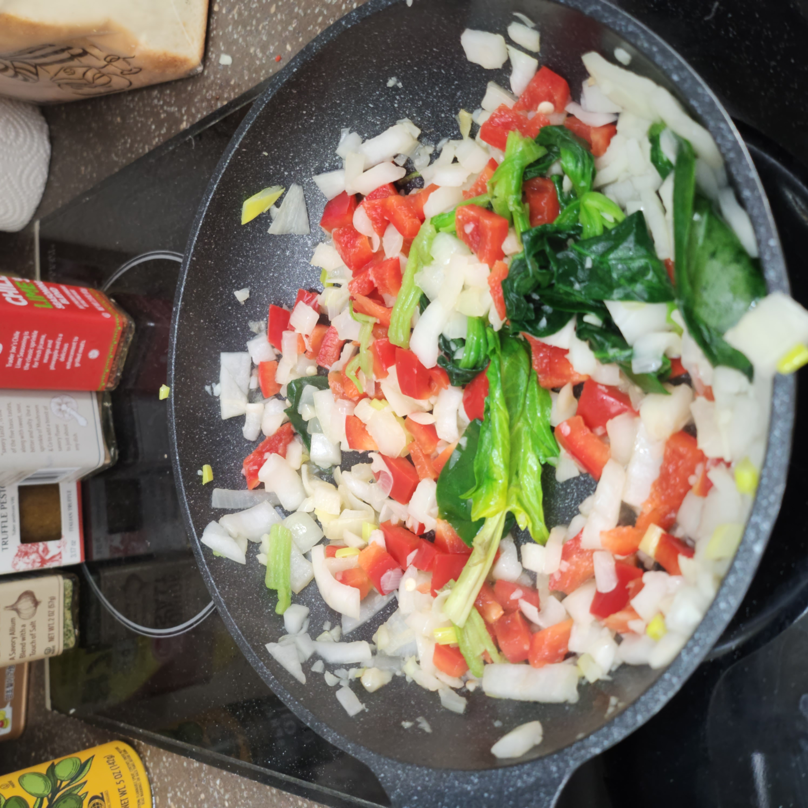
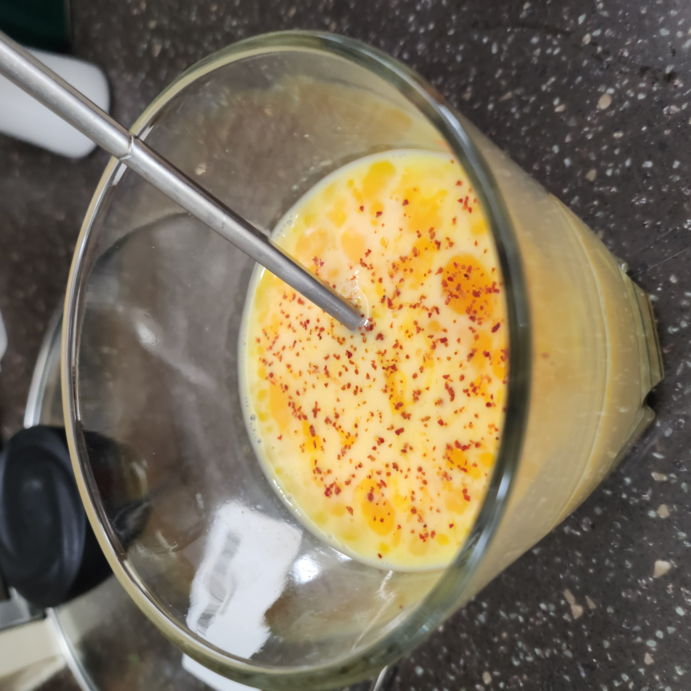
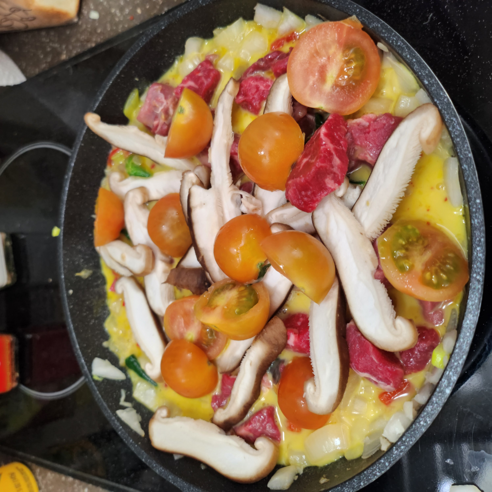
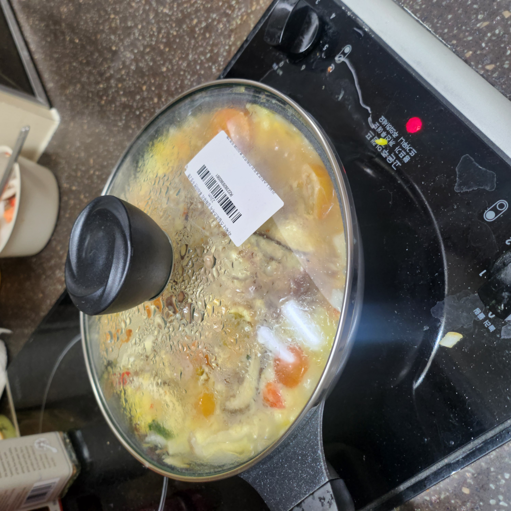
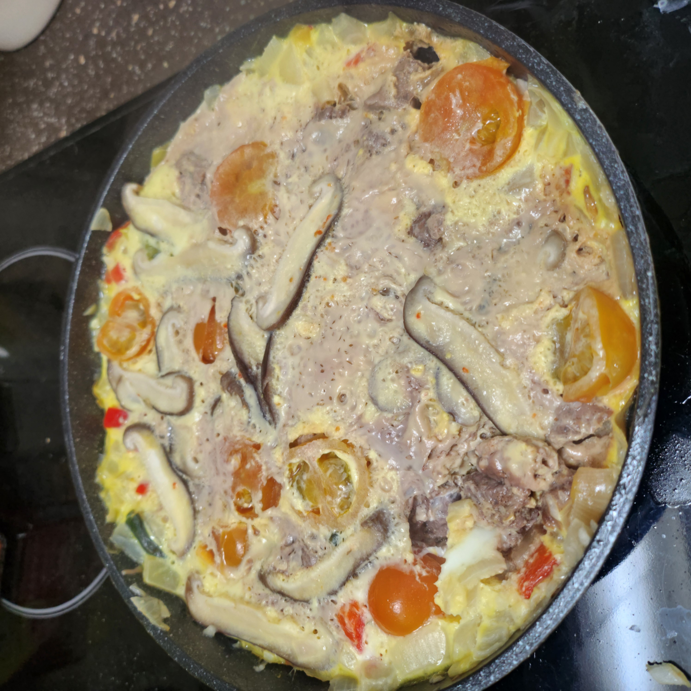

Frittata, the best egg-based Italian dish…
 Step 1. Prepare ingredients.
Step 1. Prepare ingredients.
Ingredients
spinach, beef, bell pepper, cherry tomatoes, shiitake mushrooms, onion, minced garlic, salt, milk, eggs

Step 2. Sauté!!!
Heat some oil in a frying pan and sauté the spinach, onion, minced garlic, and bell pepper.

Step 3. Making batter…
Crack 3 eggs into a bowl, add 100mL of milk, and a pinch of salt. Mix everything together to make a batter.

Step 4. Pour it all in
Pour the batter into the frying pan and add some beef, cherry tomatoes, and shiitake mushrooms.
 Step 5. Stuff it in!!
Step 5. Stuff it in!!
Press the ingredients down gently to ensure the batter covers everything.

Step 6. Time to be patient…
Cover the frying pan with a lid and cook on low heat for 15–20 minutes.

Step 7. Enjoy!
Your fritta is ready. Enjoy!